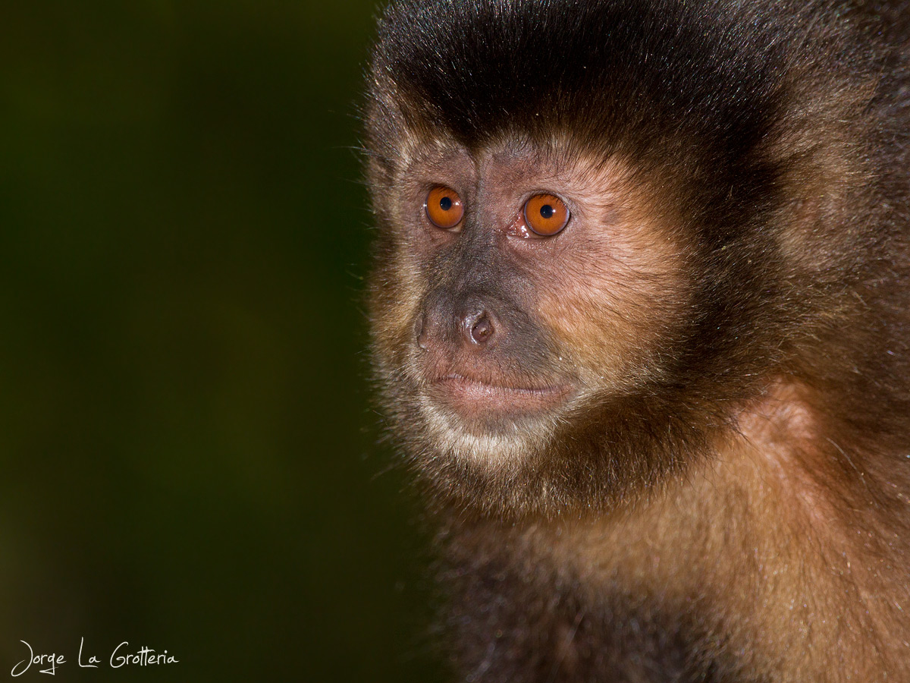
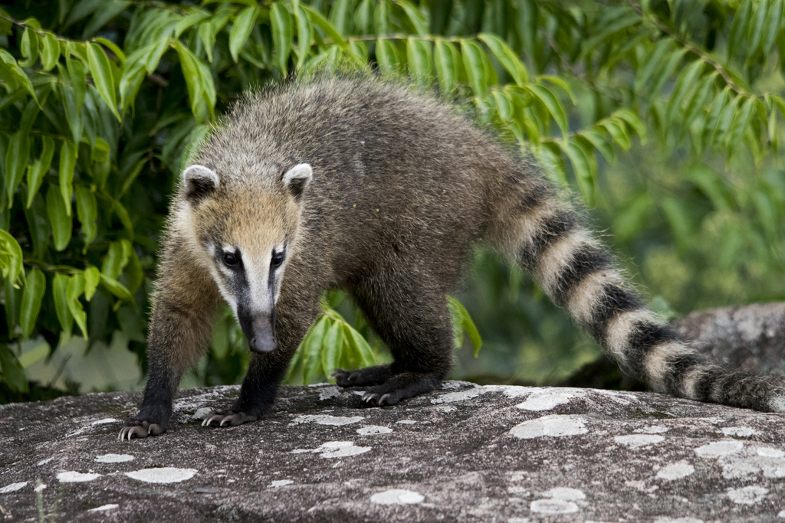
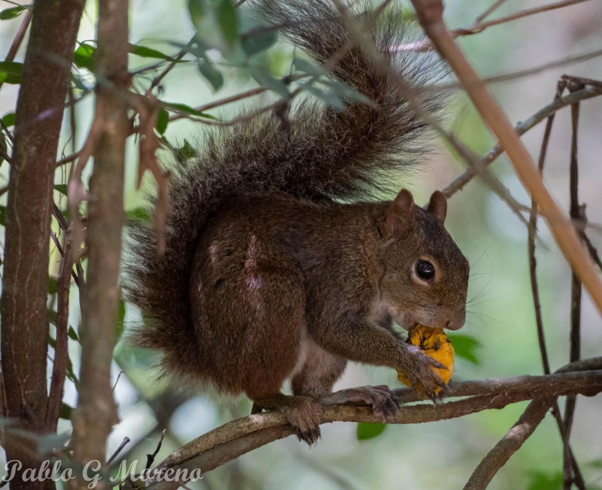
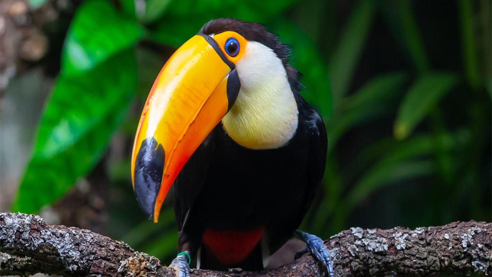
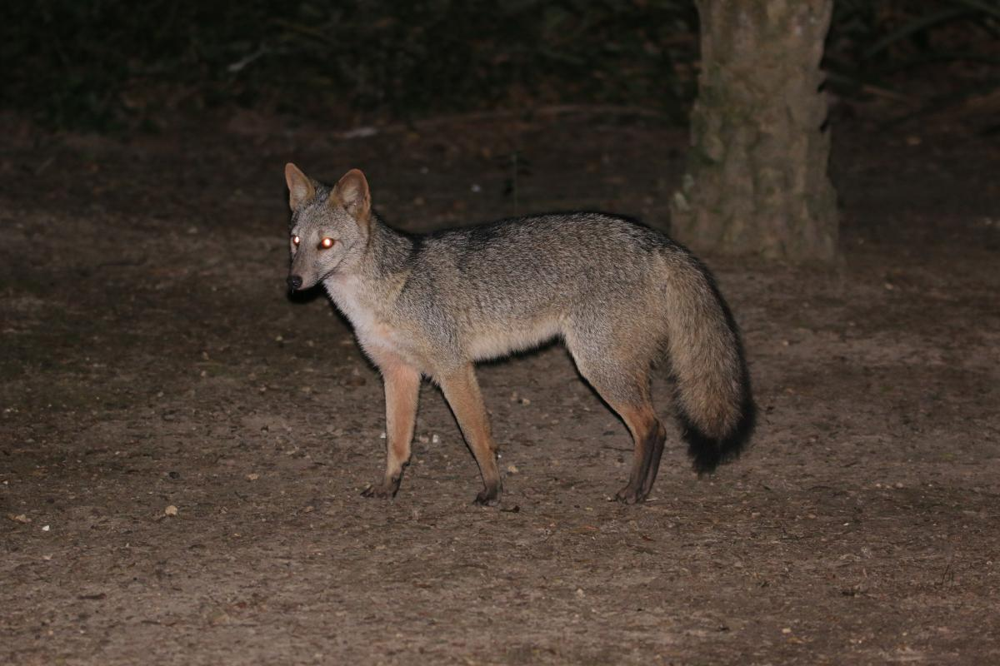
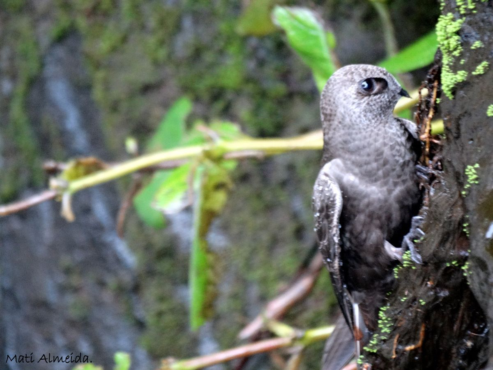
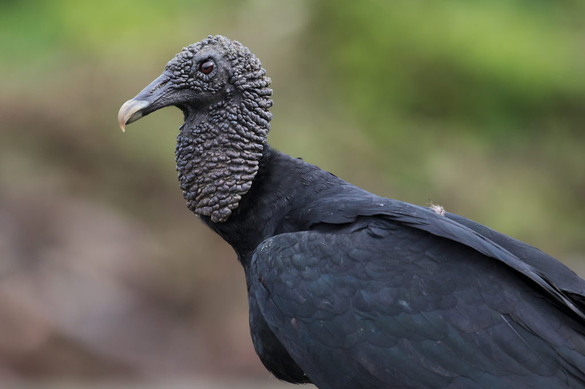

Al igual que la flora, no podríamos mencionar cada una de las
especies que componen la fauna del Parque Nacional Iguazú porque la lista sería muy extensa,
por ejemplo, en el caso de las aves en parque nacional Iguazú existen más de 450 especies.

Mono caí

Coati

Ardilla serelepes

TucanYacaréAgutíe

Zorros de monte

Vencejo de cascada

Jote / Zopilote negro